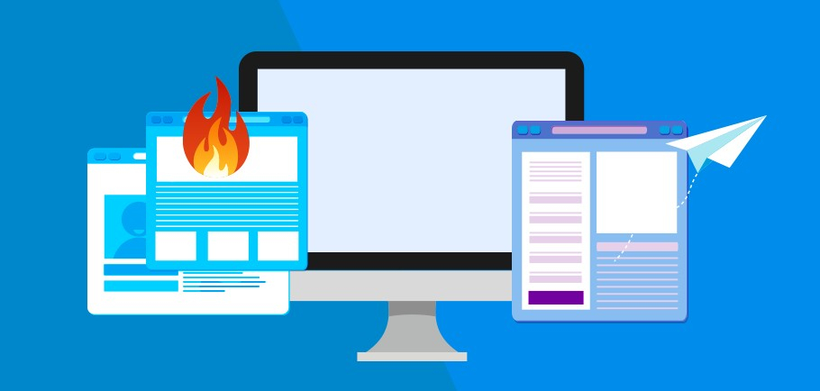

Somos estudantes do curso de web do Biopark, e criamos esse site para por em prática um projeto proposto em sala de aula.
Esse projeto consiste em criar um novo site de notícias para uma empresa de jornalismo de Toledo, buscando inovar a forma
de acesso as notícias, e também buscando atrair o público mais jovem sem perder o público mais velho.
<\n>
A diferença entre site,portal, e hotsite
Site:
Site é uma coleção de páginas da web organizadas e localizadas em um servidor na rede. Imagine um site como uma casa onde você reúne seus móveis (as informações dele) em cômodos (as páginas dele).
Portal
Um portal é um site na internet projetado para aglomerar e distribuir conteúdos de várias fontes diferentes de maneira uniforme, sendo um ponto de acesso para uma série de outros sites ou subsites internamente ou externamente ao domínio ou subdomínio da empresa gestora do portal.
Hotsite

O hotsite é focado em trazer destaque a uma campanha ou ação de marketing pontual. A proposta é divulgar algo, captar a atenção do público e conduzi-lo a um ambiente com alto poder de conversão, sempre com um posicionamento mais chamativo e com foco na proposta central.